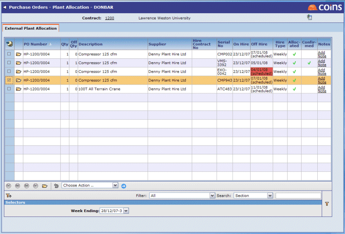

Weekly Sheets
If the and are set up to create accruals from GRNs, creates weekly sheets. Allocation allows you to record in detail what the item is used for and how much is charged. This provides more information for invoice matching. calculates the accrual when you confirm the sheet.
You must first enter a GRN for each item that is to be allocated.
Allocating weekly :
- Go to Allocation.
- Select the Week Ending date of the week for which you want to allocate .
The browse displays a line for each item during the week. By default, all the lines are fully allocated.

- To change the allocation (if the item is used on a different location), to transfer the item to a different , or to an item, click
 , enter the changes, then click
, enter the changes, then click  .
.
- If an item is still under the same conditions, you only need to confirm the allocation line.
- Confirm the allocation: the line(s) you want to confirm, and select Confirm Allocation from the Choose Action list.
creates the following week's sheets.